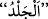
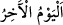

kadın imkân tanımasa zinâ meydana gelmez.
__WORD__ deriye vurmak, deriye sopa ile vurarak dövmek demektir. Mânâ şöyledir: ‘O
halde ey şehir halkı/hükmü uygulayıcılar; onlardan her birine yüz kırbaç vurun.’
İlk zamanlarda bu hüküm hem muhsan olan hem de muhsan/namuslu olmayan kadın ve
erkekler için geçerliydi. Sonra muhsanlar hakkında bu hüküm nesh edildi. Rasûlullah
(s.a.)’in Mâiz ve diğer bâzı zinâ eden kimseleri recmetmiş olması nâsihin, yâni bu
hükmü ortadan kaldırıp başka bir hüküm koyan delîlin kesinliğini isbâta yeter. Bu aynı
zamanda Kitabın sünnetle neshine bir örnektir. Muhsan; yâni evlilikle korunmuş
olanların cezâsı recm, muhsan olmayanların ise celdedir.
Ebû Hanîfe’ye göre recm konusunda bir kimsenin muhsan/namuslu sayılmasının altı
şartı vardır. Bunlar: Müslüman olmak, hür olmak, akıllı olmak, büluğ çağına ermiş
olmak, sahih bir nikâhla evli bulunmak ve cinsî münâsebette bulunmuş olmaktır (duhûl).
Bu şartlardan biri olmadığında muhsanlık ortadan kalkar. Kazf (zinâ suçu yükleme)
konusunda ise muhsan olmanın beş şartı vardır. Yukarıda sayılan ilk dört şart ve bir de
iffetli olmak.
“Muhsan bir kimse recmedildi” denildiğinde müslüman, hür, akıllı, bülûğa ermiş, evli
ve cinsî münâsebette bulunmuş birinin recmedildiği anlaşılır. “Muhsan birine iftirâ
edildi” denildiğinde ise müslüman, hür, akıllı, bülûğa ermiş ve iffetli birine iftirâ
edildiği anlaşılır. Bu şartlardan biri bulunmayınca muhsan olunmaz.
“Allah’a ve âhiret gününe inanıyorsanız,” Bu ifâde Allah ve dini için heyecana
getirme ve öfkeleri alevlendirme bâbındandır. Çünkü Allah’a ve âhiret gününe îmân;
Allah’a tâatte ciddi, hükümlerini icrâda gayretli olmayı gerektirir.
Cüneyd Bağdâdî (r.h.): “Allah’ın emirlerine aykırı davrananlara şefkat göstermek,
onlara uygun hareket edenlerden yüz çevirmek gibidir.” der. Âhiret gününün
zikredilmesi, hadlerin tatbîkinde gösterilecek musâmaha ve hadleri iptal karşılığında o
günde karşılaşılacak azâbı hatırlatmak içindir. Kıyâmet günü, “” yâni “son gün” olarak
isimlendirilmiştir. Çünkü o günden sonra artık hiç bir gece olmayacağından ondan
sonraki bütün günler tek gün sayılmıştır.
Denilir ki bütün nurlar toplanır ve cennette bir tek gün olur ve bütün karanlıklar bir
araya gelir ve cehennemde bir tek gece hâline gelir.
“Allah’ın dîninde” Allah’ın hükümlerini uygulayıp hadlerini tatbik ederken “onlara
acıyacağınız tutmasın.” Bahru’l-muhît’ta “__WORD__ rahmetin daha incesi/ileri
derecesidir” denilmiştir. Dostluk ve şefkat göstermek demektir. Nekra olması da azlık
bildirmek ifâde içindir. Yâni sizi azıcık bir acıma ve merhamet bile tutmasın, demektir.
Bu zinâ eden iki kişiye karşı olan dostluk ve muhabbetiniz, dînin hükmünü uygulamaya
engel olmasın. Yoksa haddi iptal eder veya vururken acıtmamak ve gereken sayıyı
tamamlamamak sûretiyle müsâmaha yolunu tutarsınız.
Bu ise şöyle olur. Kendisine had uygulanan kimse vurma esnâsında garip hareketler
yapar; yalvarır, yakarır, merhamet diler hatta bazen baygınlık geçirir. Bu duruma şâhid